Page 1 / 原始页码 545
第 8 篇 全球环境
找出残害两栖动物的真凶
1995年，某高校在明尼苏达州 (Minnesota) 进行了一次相当正式的野外生物学实习，其主要目的是采集青蛙。然而这次实习却成了一次奇异的经历。学生们所捕获的青蛙中，近一半都是畸形的——有的多脚，有的少肢，有的则缺了眼睛。不久之后，同学们通过互联网得知，这种奇怪的现象不止发生在明尼苏达，邻近的州也有类似报道——越来越多的畸形青蛙陆续被发现，遍及美国和加拿大。
一些环境学家推测，水中的化学污染物很可能导致了畸形青蛙的产生。他们担心越来越多的畸形青蛙预示着环境污染将给包括人类在内的其他物种带来潜在的威胁。
然而，另外有一些科学家则怀疑是别的因素导致了畸形青蛙的产生。虽然像杀虫剂这样的化学物质能够导致污染源附近的物种畸变，但是，像寄生性感染等其他的环境因素也能影响局部的生境。为了验证这一观点，1999年，研究人员用寄生生物感染生长发育中的蝌蚪，发现寄生生物的确扰乱了蝌蚪四肢的发育，从而导致了多肢和缺肢现象的发生。
对于这种新的解释，认为杀虫剂等化学物质才是导致青蛙畸形的主要原因的科学家提出，寄生生物对当地种群的影响并不能完全说明它确实导致了青蛙的畸形。况且，他们进一步指出，即使真有如此大的影响，也不能排除污染物在此事件中的决定性作用。
畸形青蛙很快受到了全国的关注，但这不过是冰山一角，两栖动物的衰亡已成为一个全球性的问题。在过去的50年中，全球的两栖动物数量遭受了灾难性的减少；其中一部分原因与人类有关，诸如动物栖息地的破坏、竞争物种的引入、工业污染等。
既然事件是全球性的，我们就不得不考虑两栖动物的减少是否反映了全球环境的恶化。酸雨导致的水污染，臭氧层破坏所带来的离于辐射（紫外线）的增加，气候变暖导致的天气异常——所有这些变化都有可能是导致两栖动物数量减少的原因。
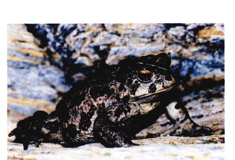
正在消失的两栖动物 在许多地区，两栖动物的数量正在大量减少，比如这种西部蟾蜍 (Bufo boreas)。
Page 2 / 原始页码 546
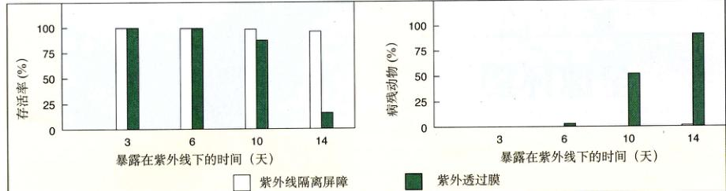
布劳斯坦 (Blaustein) 的紫外照射试验 当将紫外线屏蔽后，蟾蜍的卵孵化率明显提高而残废率明显降低。
Blaustein 小组选择了一种长趾蝾螈 (Ambystoma macrodactylum) 以及几种青蛙作为样本进行两组实验，以寻找影响两栖动物生长发育的因素。
Blaustein 的野外实验是平行观测两组自然发育的受精卵，一组具备紫外线保护盾，一组不具备。观测的重点是畸形个体及个体存活的几率。用于实验的受精卵被放在两组浅水（小于 20 cm）围篱中，一组设置了紫外线米勒盾 (Mylar shield) 以阻隔射线，另一组则覆以能够透过紫外线的醋酸纤维素膜（每组围篱50枚卵，更新4次）。研究者将围篱放在无孔的塑料小水袋里，灌上天然池塘水，再将其放回到至池塘中，从而使实验胚胎能在完全自然的情况下生长发育但又不至于四散。紫外线米勒盾可以阻挡 94% 以上的紫外线，醋酸纤维素膜相反，可以使 90% 以上的紫外线通过。
实验结果
有紫外线保护盾的胚胎，其孵化率和存活率远远高于有紫外线透过膜的胚胎，且发育畸形的比例大大低于未加保护的胚胎。29 个暴露在紫外线下的胚胎成功孵化，其中有 25 个发育畸形；而拥有紫外线屏蔽的一组孵化了 190 个胚胎，只有 1 个出现了畸形。这个结果有力地支持了自然界中紫外辐射能对两栖动物的生长发育产生负面影响，从而导致畸形的假说。
Blaustein 小组还推测，青蛙及其他一些两栖动物受影响较大的原因是，因为其卵和胚胎的光裂解酶含量与野生蝾螈一样，它们的水平均较低。无论是实验室中的实验还是野外实验都证实了这一观点，因为光裂解酶含量较高的青蛙受紫外线影响明显偏小。通过对 10 个不同种的两栖动物的研究，该小组发现紫外线对发育中的卵和胚胎的影响明显与光裂解酶的含量有关。
在这些实验中，一种种群数量并没有减少的种类——太平洋树蛙 (Hyla regilla) 显示具有最高的光解酶活性，没有受紫外线的影响。那些暴露于紫外线 UV-B 下的个体，其死亡率也没有明显的上升。
而在另两组平行实验中，种群数量大幅减少的瀑蛙 (Rana cascades) 和西部大蟾蜍 (Bufo boreas) 的光解酶含量还不及太平洋树蛙的三分之一，其受紫外线的影响也大大高于太平洋树蛙，在紫外线照射下，它们的死亡率大幅上升。
所有的实验结果都证明，由于臭氧层消耗而引起的紫外辐射增强很可能是导致光解酶含量较低的两栖动物大量衰亡的主要原因之一。但值得深思的是，化学污染物的释放是否也会造成两栖动物体内这种重要的酶含量的降低？这方面的研究并没有停止。无论如何，有一点是毋庸置疑的，那就是两栖动物减少的原因绝不只有这一个。
Page 3 / 原始页码 547
第28章 生态系统动力学
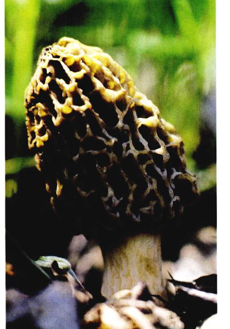
图 28.1 蘑菇远不止是一种美味佳肴 蘑菇和其他一些生物是生态系统中最重要的循环动力，它们将尸体分解，并将其转化为成某些特定元素如碳和氮，释放回营养循环中。
地球对物质来说是一个封闭系统，对能量来说则是开放系统。在一个生态系统中，物质的循环、能量的获取和消耗是由所有生物体共同实现的（图 28.1）。在这一章里我们将看到，包括人类在内的所有生物都必须依靠其他生物体——植物、藻类、真菌以及一些细菌——来反复利用组成生命的基本元素。在第29章里，我们主要讨论组成生物圈的各式各样的生态系统。在第30和31章里，我们将关注生物圈以及生活在其中的各种生物所面临的诸多威胁。
Page 4 / 原始页码 548
28.1 生态系统中的化学循环
生态系统中组成生命的有机化学元素的循环都是通过生物和化学的过程得以实现的，这样的过程称为生物地球化学循环 (biogeochemical cycles)。从全球来看，只有很少一部分物质长期贮存于生命体内，大部分物质都储存在环境中：大气圈、水圈和岩石圈。最终进入有机体的碳（主要是二氧化碳）、氮和氧主要来自于大气；磷、钾、硫、镁、钙、钠、铁和钴则主要来自于岩石。在这些元素中，有机体对碳、氢、氮、氧、磷、硫的需求量较大，对其他元素的需求则较少。
当这些物质从大气或海洋、河流中进入生命体，进而被利用的时候，生态系统的物质循环便开始了。岩石被风化，其中的许多矿物质进入水中，生物饮水的时候，它们便进入了生物体内。生物体被另外的生物吃掉，物质就从最初获得它们的生物体进入到下一个生物体中。当生物体死亡后分解腐烂，物质又将返还给了环境，从而完成了一次循环。
28.1.1 水循环
水循环 (图 28.2) 是所有生物地球化学循环中最常见的一种。所有的生物都直接与水相关，所有的生物身体的主要组成成分都是水。水能提供氢离子，而氢离子的移动可以为生物带来 ATP。仅从这点来看，水已经是不可或缺的了。
1) 可循环水的运动
地球表面四分之三为海洋所覆盖。在太阳能的作用下，水分从海洋蒸发到大气中。在陆地上，大气中又进一部分水分蒸气，这其中近 90% 来自于植物表面的蒸腾作用（参见第39章）。所有的这些水蒸气中，绝大部分形成了地表径流和地下径流，只有 2% 的水以各种形式留在了陆地上——冰、土壤水、生物体内的水，其余的都是可循环水，在大气和海洋之间循环不息。
2) 水对生物体的重要意义
生物体吸收和利用水的能力决定了它们的生死存亡。植物源源不断地从土壤里吸收水分。农作物每生产 1 kg 的粮食需要 1000 kg 的水，自然群落也是如此。动物获取水的途径可以是直接的，也可以从植物或其他动物中获取。因此，一个地域内可循环水的数量决定了当地物种的种类和丰富程度。
3) 地下水
地表下有一层可渗透的饱和蓄水层，主要由岩石、沙及砾石构成，其中蕴藏了大量的地下水。虽然地下水不如溪流、湖泊、池塘等水样显而易见，但在许多地方，地下水却是最重要的储水方式。在美国，地下水占了淡水储量的 96% 以上。浅层可流动地下水形成了一个水层，一部分流入河流，一部分被植物吸收。深层地下水可以掘井获取，一般很少利用。浅层地下水可以得到补充和更新，土壤的过滤、池塘、湖泊、溪流的渗透水都是补充水的来源。深层地下水只能由浅层地水补充，因而更新速度很慢。
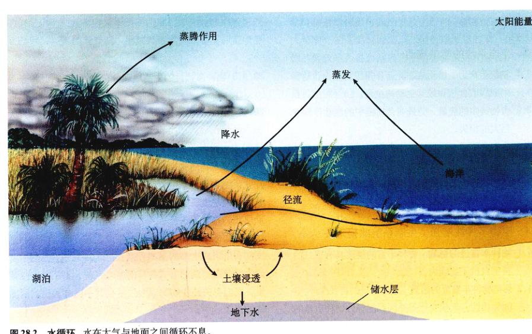
图 28.2 水循环 水在大气与地面之间循环不息。
Page 5 / 原始页码 549
地下水的流动速度比地表水小得多，要几天甚至几米，快也不过每天 1 m。在美国，总用水量的 25%，居民饮水量的 50% 来自于地下水。农村地区更是几乎所有的用水都来自井水，而且对地下水的需求量以对比地表水需求量两倍的速度增长。在中部大平原地区，因农业用水和饮用水对奥加拉拉蓄水层的开采速度已超过了其自然更新速度。这严重威胁了该地区的农业生产，而同样的问题在全球干旱的地区普遍存在。
由于庞大的开采量和缓慢的流速，日益严重的地下水污染已成为一个严肃的问题。据估计，美国约 2% 的地下水已经遭到污染，这个比例还在持续增加。杀虫剂、除草剂、化肥等已经严重影响了水质。另外一个主要污染源是垃圾的倾倒，仅在美国就有 20 万个水洼、池塘和礁湖被作为倾倒化学物质的场所。更糟糕的是，由于数量庞大、流速过缓以及难以接近，想要治理受污染的地下水几乎是不可能的。
4) 水循环的中断
在热带雨林这样的丛林生态系统中，空气中 90% 以上的水蒸气被植物所吸收，而后又以蒸腾作用返还给大气。由于植物众多，当地植被就成为降雨的最主要来源。从某种意义上说，植物可以自己“造雨”：由植物蒸发到空气中的水又以雨的形式重新降到地面。
在那些森林被砍伐的地方，生命水循环遭到破坏，水无法以蒸汽形式返回空气中。水分最终流进了大海，而非非蒸发变成云，然后又降回森林。早在18世纪末，著名的德国探险家洪堡德 (Alexander von Humbolt) 就指出，哥伦比亚的热带雨林被砍伐使得水不能重返大气，从而导致了半干旱沙漠的出现。而发生在当代的，以“开发”名义对热带和温带雨林的彻底砍伐和焚烧更是一出悲剧（图 28.3）。由于森林的乱砍滥伐，非洲东海岸马达加斯加岛广大区域已由一个世纪前的满是茂密的热带森林变成了半干旱沙漠。因为没有降水，所以没有办法让这片土地重披绿装。水循环一旦被破坏，就再也不容易重新建立。
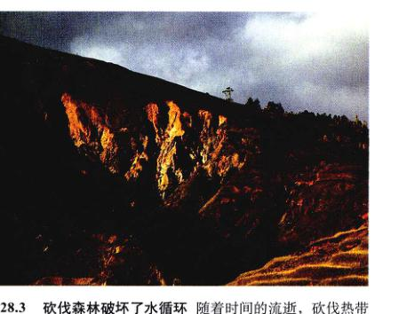
图 28.3 砍伐森林破坏了水循环 随着时间的流逝，砍伐热带雨林的后果可能更为严重，就像图中所示的马达加斯加岛的一部分一样。
28.1.2 碳循环
碳循环 (carbon cycle) 主要是占空气体积 0.03% 的二氧化碳的循环（图 28.4）。每年，全球大气 7000 亿吨的二氧化碳中约有 10% 被用来进行光合作用，与水一同制造出有机物（参见第10章），实现这一过程的是光合细菌、原生生物和植物。所有陆生异养生物则间接通过光合生物来获取碳。当死亡的生物体腐烂时，微生物将二氧化碳返还到大气中。随后，空气中的二氧化碳又为其他生物所利用。
光合生物利用二氧化碳制造的有机物最终会被分解，释放到空气或水中。某些特定的含碳物质，如纤维素，不像其他物质那样易于分解，但是一些特定的细菌、真菌以及昆虫拥有分解这些物质的能力。尽管如此，一些纤维素历经久远的年代而没有被分解，它们被保留下来（譬如泥炭），最终形成了石油和煤这样的化石能源。
除了大气中的 7000 亿吨二氧化碳，还有近 1 万亿吨的二氧化碳溶解在海水中。这些二氧化碳有一半以上处在光合作用强烈的浅海层。化石能源，主要是石油和煤，储藏了 5 万亿吨以上的碳，另外还有 6亿~1万亿吨的碳随时储藏在生物体中。从全球来看，呼吸作用和光合作用（参见第9、10章）恰好保持了一种平衡，但这种平衡已被化石燃料的燃烧所打破，石油、煤和天然气的燃烧向大气释放了数量巨大的二氧化碳。二氧化碳的增加已经影响了全球气候，在不久的将来这种趋势还将有加。
Page 6 / 原始页码 550
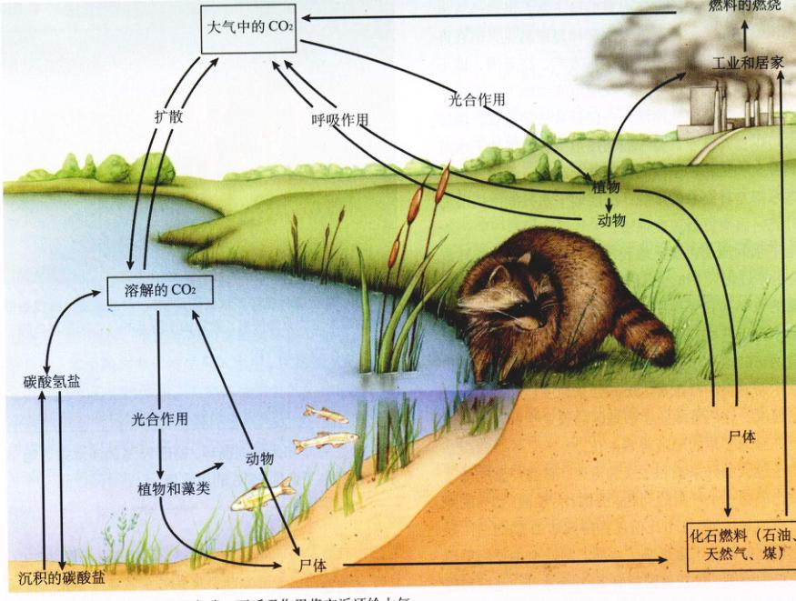
图 28.4 碳循环 光合作用固定碳，而呼吸作用将它返还给大气。
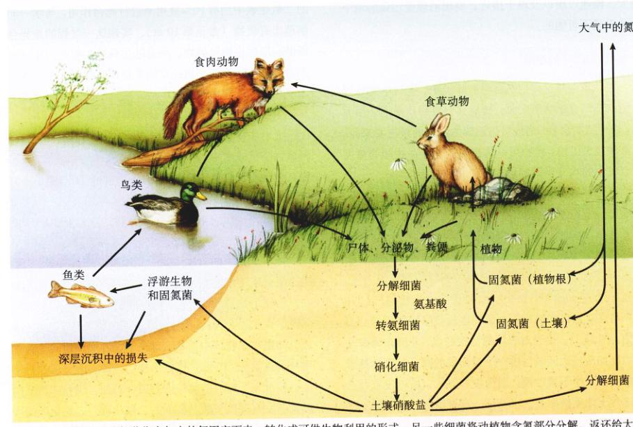
图 28.5 氮循环 一些细菌将大气中的氮固定下来，转化为可供生物利用的形式。另一些细菌将动植物含氮部分分解，返还给大气。
Page 7 / 原始页码 551
速的迹象，我们将在第30章中讨论这个问题。
28.1.3 氮循环
只有少数生物——它们全部是细菌——能通过氮循环 (nitrogen cycle) 将大气中的游离氮（约占地球大气体积的 78%）转化成可供生物利用的形式（图 28.5）。双原子氮分子中的氮氮三键使得它相当稳定。在生命体中，氮的分解主要依靠铁氧化还原蛋白、还原原酶、固氮酶三种蛋白质的共同作用。此过程需要 ATP 提供能量，还需要光合作用或呼吸作用所产生的电子以及一个强还原剂。固氮的反应式可以表示为：
N₂ + 3H₂ → 2NH₃
某些细菌能将空气中的游离氮固定下来。大部分这样的细菌单独存活，但也有一部分共生在豆科植物和其他一些植物的根上，而这部分细菌所固定的氮才是氮生产中的主要部分。这些生物在过去漫长岁月中的辛勤工作，使得几乎所有的生态系统中都储存着大量的氨和硝酸盐，而这些储备正是生物所需的直接来源。
生物体中的含氮组分，例如动植物体内的蛋白质，可以很快地被某些细菌和真菌分解。这些细菌和真菌利用分解得到的氨基酸合成它们自身的蛋白质，并将多余的氮以 NH₄⁺ 的形式放出，这个过程被称为氨化作用 (amonification)。而 NH₄⁺ 能被某些微生物转化成土壤中的硝酸盐和亚硝酸盐，接着被植物吸收。
固定在土壤中的氮将会不断流失。在缺氧的环境下，亚硝酸盐主要被厌氧微生物还原为 N₂ 和 N₂O，以气体的形式返还给大气。这个过程叫做反硝化作用 (denitrification)。
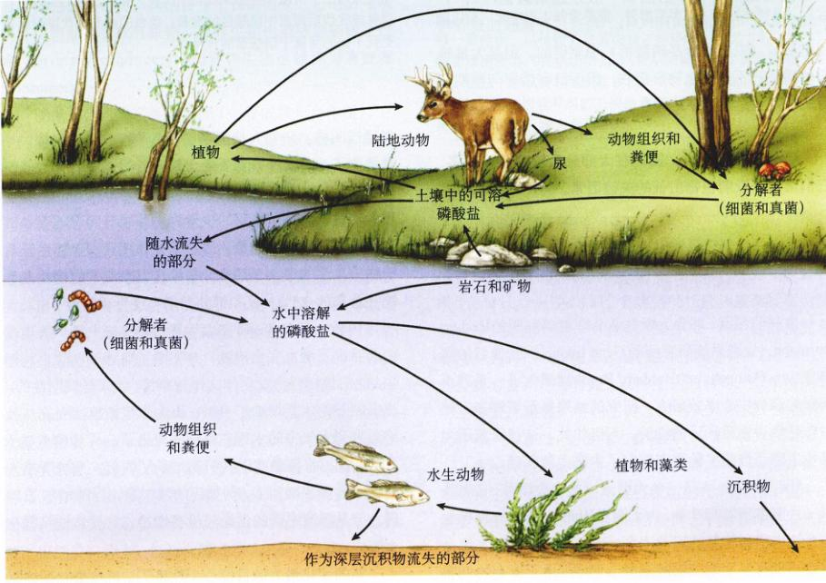
图 28.6 磷循环 风化的磷酸盐从土壤进入水中，为动植物所利用。当动植物被分解的时候，磷酸盐又在土壤中沉积下来。
Page 8 / 原始页码 552
28.1.4 磷循环
除水、碳、氮、氧四种循环，大部分参与生物地球化学循环的营养物质不是存储在大气中，而是存储在岩石圈，磷循环 (phosphorus cycle)（图 28.6）就是一个典型代表。磷是组成 ATP、磷和核酸的成分，在植物的生理过程中扮演着十分重要的角色。
除了氮以外，磷是植物生长中最匮乏的必需元素。由于磷酸盐难溶于水，它们只以岩石的形式存在，而土壤中的含量很低。随着岩石的风化，磷酸盐被河流小溪输送到海洋，并在海底沉淀，只有当海底慢慢抬升，它们才得以重见天日，南北美洲的太平洋沿岸便是如此。上升洋流将磷酸盐送至海面，被海藻吸收；接着海藻被鱼吃掉，磷便随之流入鱼体内；鱼再被海鸟吃掉，磷又进入了海鸟体内。海鸟将大量的粪便排在海边，形成积淀。这些积淀下来的鸟粪可以用来作磷肥料，在另一些地区，人们将含磷丰富的风化岩石用作磷肥。陆地上的磷是十分有限的，只有大海中有取之不尽的磷源。正因为如此，深海矿藏的开发变得越来越有商业吸引力。
现在全世界农田每年要施用数以百万吨计的磷肥，用以肥沃土壤。总的来说，当前每年施用的磷酸盐是农作物所需量的3倍，这些磷一般是超磷酸盐 (superphosphate)。可溶的 Ca(H₂PO₄)₂ 是通过将硫酸加到骨粉或磷灰石（主要成分是磷酸钙）中制得的。但是大量施用的磷肥并不能为植物所吸收，因而没有带来与预期相符的成正比的收获。
28.1.5 生物地球化学循环详解：森林生态系统的物质循环
自1963年起，耶鲁大学林业与环境研究所的 Herbert Bormann、生态系统研究所的 Gene Likens 以及他们的同事在 New Hampshire 的 Hubbard Brook 地区做了一系列不间断的森林生态系统研究。研究的成果揭示了许多有关生态系统中物质循环的细节。不只如此，这些研究还为其他生态系统的实验研究奠定了方法上的基础。
Hubbard Brook 是一个大型流域的中央溪流，它灌溉了一片温带落叶阔叶林。为了测量 Hubbard Brook 森林生态系统中水和物质的流动速度，研究人员在六条支流上建造了带有 V 字型凹槽的混凝土堰。由于所有的低堰都固定在河床的岩石上，因此所有从峡谷中流出的水的移动可以认为带来了 ATP。仅从这点来看，水已经是不可或缺的了。
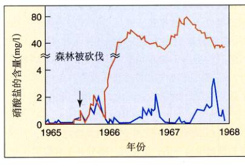
图 28.7 Hubbard Brook 实验 (a) 将一条河流附近 38 英亩的森林全部砍伐，连续监测几年河水成分的变化情况。(b) 砍伐森林大大增加了河流中生态系统物质的流失量。红色的曲线代表森林被砍伐后河流中硝酸盐的含量；蓝色的曲线则代表附近未受到干扰的河流中硝酸盐的含量。
将通过凹槽。研究人员测量了6个峡谷中的水流量，并且检测了6条支流中物质的含量。通过这些研究，他们得到结论，该地区自然状态下森林有着非常好的涵养物质的功效。随雨雪降落的少量物质几乎等于随流水带出峡谷的营养物质的量，而这部分物质只占全部生态系统物质总量的很小一部分。每年这里净流失的钙约占系统钙总量的 0.3%，氮和钾的净增长率也微乎其微。
1965-1966年，研究人员将六条支流中某一条流域内的乔木及灌木完全清除，并喷洒了除莠剂以防止其再生，他们想知道会发生什么样的事情。结果是戏剧性的：流出峡谷的水量增加了 40%；因为本该被植物吸收并最终蒸发到大气中的水现在也随河流出了。从1966年的6月到9月，水流量比以往同期增长了四倍。系统所损失的物质的量也增加了，例如钙的流失量比以往增加了 10 倍。但是溪流中磷的含量并没有增加，它显然被保留在土壤中。
氮的变化最为触目惊心（图 28.7）。自然生态系统原本以每年每公顷 2 kg 的速度吸收氮，但被砍伐过的生态系统却以每年每公顷 120 kg 的速度流失氮。河水中硝酸盐的含量已经超过了安全饮用的标准，并出现了大量的水华。换句话说，被砍伐的峡谷的肥沃程度急剧下降，而爆发洪水的危险却大大增加。这个实验对 21 世纪初的我们特别有指导意义，因为大面积的热带雨林被用作耕地已被无情地破坏。对此更深入的讨论将在第30章。
Page 9 / 原始页码 553
28.2 生态系统由捕食与被捕食的关系构成
28.2.1 营养级
生态系统包括自养生物 (autotroph) 和异养生物 (heterotroph)。自养生物包括绿色植物、藻类及一部分细菌，它们能吸收太阳光中的能量，为自身生长制造食物。异养生物包括动物、真菌、大多数原生生物及细菌，还有非绿色植物，为了满足自身生长的需要，它们必须从自养生物那里获取有机物。自养生物也被称为初级生产者 (primary producer)，而异养生物被称为消费者 (consumer)。
能量一旦进入了生态系统（一般依靠光合作用），它便随着代谢作用的进行而缓慢释放。首先获取这些能量的自养生物为异养生物提供了所需的全部能量。组成生态系统的所有生命实际上延长了能量向空间的释放时间，这些能量是从太阳光获得的。
作为陆地生态系统初级生产者的绿色植物，通常只能将照射在它们叶片上能量的 1% 转化成蕴藏在食物中的能量。在特殊的以原生生产为主的系统中，这个百分比可能稍高一些。当这些植物被其他生物消费的时候，积累在这些生物体内的能量只有一部分进入消费者的身体。
消费者存在几种不同的级别。初级消费者 (primary consumer)，或者称为食草动物，直接以绿色植物为食。次级消费者 (secondary consumer)，包括食肉动物和动物性寄生生物，它们以食草动物为食。分解者 (decomposer) 将其他生物体内的有机物分解。另外一个包括了分解者的更一般的概念是食腐者 (detritivor)。食腐者以生态系统产生的废料为食，包括腐动植物，如蟹、秃鹫、豺，同时也包括分解者。
所有这些级别存在于每一个生态系统中。它们代表了不同的营养级 (trophic level)，trophic 一词来源于希腊词 trophos，意思是“给食的人”。每层营养级的生物，以捕食和被捕食的关系而构成的一个系列，称为一条食物链 (food chain)（图 28.8）。食物链的长度和复杂程度因情而异。实际上，一种生物只捕食某一种生物的情况是非常少见的。一般说来，每种生物都以两种或两种以上生物为食，并同时成为几种动物的食物。如果用图表示这种情况的话，各种生物之间的关系形成一个网络，而并非一条直线，这被称为食物网 (food web)（图 28.9）。
生物体摄取的食物中具有化学能，其中一部分被用来维持生命活动（例如实现机械运动）。消耗化学键中的能量必然导致热的产生，从而使得它不能够再被用来做功。另一部分化学能被保留下来，形成生长发育过程中构建新机体。通常所摄人能量的 40% 或更少一些将被这样储存下来。无脊椎动物一般将这 40% 能量的约四分之一
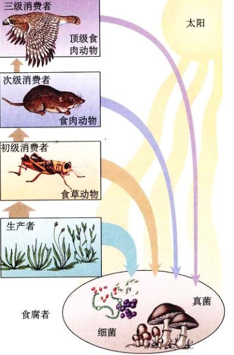
图 28.8 食物链中的营养级 植物直接从太阳获取能量，成为第一营养级。以植物为食的动物，如蚱蜢，是位于第二营养级的初级消费者（食草动物）。以食草动物为食的食肉动物，如地鼠，是处于第三营养级的次级消费者。以小型食肉动物为食的鹰，是处于第四营养级的三级消费者（顶级消费者）。食腐者以所有营养级的生物为食。
Page 10 / 原始页码 554
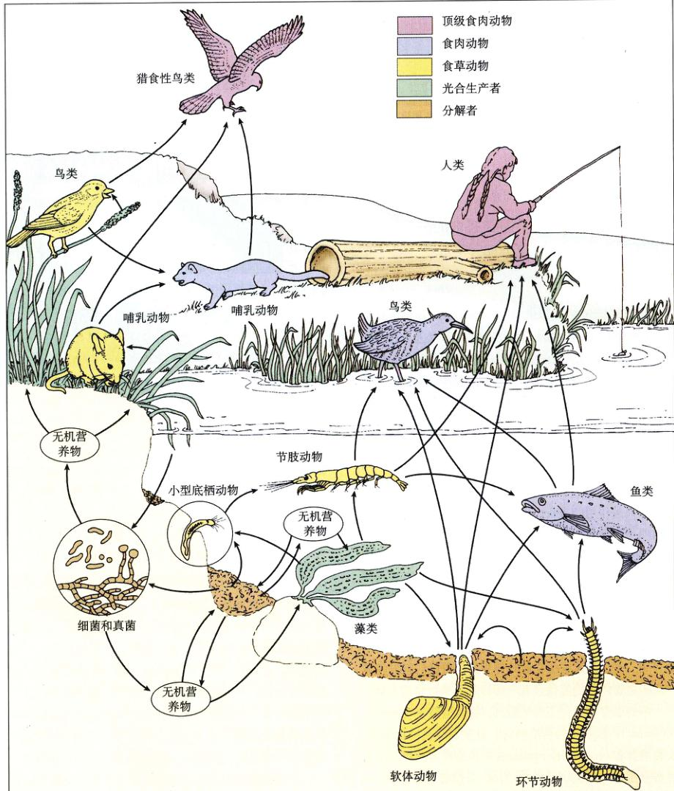
图 28.9 盐沼中的食物网显示生物间的复杂关系 小型底栖动物是生活在沙粒之间的小动物。
Page 11 / 原始页码 555
一用于生长发育，换言之，无脊椎动物所吃食物的约 10% 转化成它的身体组织，也就是转化到它的天敌的食物中。虽然对应的数字可由食肉动物的约 5% 浮动到食草动物的近 20%，但 10% 是有机物达到下一级营养级的一个很好的平均值。
28.3 生态系统的能量流动
28.3.1 初级生产力
照射到植物上的太阳能，约有 1%~5% 被转化为有机物中的化学能。初级生产量 (primary production) 或初级生产力 (primary productivity) 用来描述一定土地面积上一段时间内利用太阳能生产的有机物的数量。总初级生产力 (gross primary productivity) 是指光合作用所生产的所有有机物的总和，包括生产者通过自身的呼吸作用消耗掉的有机物。净初级生产力 (net primary productivity, NPP) 则是指某一群落一定时间内能为异养生物提供的有机物总量，它等于总初级生产力减去光合生物新陈代谢所消耗的能量。由于净生产力的存在，生态系统中所有生物的净重量，即生物量 (biomass) 总是增加的。
1) 产生生物群落
某些生态系统的净初级生产力较高。例如，热带雨林的湿润沼泽每年每平方米通常生产 1500~3000 g 有机物。相反，其他群落与此对应的数字分别为：温带森林 1200~1300 g；热带草原 900 g；沙漠 90 g（表 28.1）。
表 28.1 陆地生态系统的年生产力
| 生态系统类型 |
净初级生产力 (NPP)
单位面积 NPP (g/m²) |
全球 NPP (10⁹ 吨) |
| 热带雨林 | 2200 | 37.4 |
| 湿地 | 2000 | 4.0 |
| 热带季相林 | 1600 | 12.0 |
| 温带常绿林 | 1300 | 6.5 |
| 温带落叶阔叶林 | 1200 | 8.4 |
| 热带草原 | 900 | 13.5 |
| 北方针叶林 | 800 | 9.6 |
| 林地和灌木地 | 700 | 6.0 |
| 耕地 | 650 | 9.1 |
| 温带草原 | 600 | 5.4 |
| 苔原和高山带 | 140 | 1.1 |
| 沙漠和半沙漠灌丛 | 90 | 1.6 |
| 沙漠、岩石、沙砾和冰层 | 3 | 0.07 |
资料来源：Whittaker, 1975。
2) 次级生产力
异养生物的生产效率称为次级生产力 (secondary productivity)。因为食草动物和食肉动物不能进行光合作用，它们不能直接利用 CO₂ 合成生物分子。因此，它们只有采食植物或其他异养生物来获取生物分子。食草动物次级生产力约为其基础的初级生产力少一个数量级，那么植物中的能量到哪里去了呢？首先，生物量很大一部分是不是被食草动物所消费，而是被分解者群落（细菌、真菌和食腐动物）消费了。其次，一部分能量不是被食草动物的身体吸收而是随它们的粪便排出体外，进而被分解者吸收（图 28.10）。第三，食草动物吸收的所有化学能并非都转化为其身体的有机分子化学能，
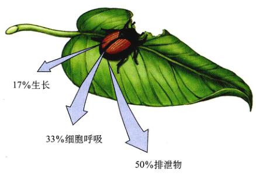
图 28.10 异养生物怎样利用食物中的能量 异养生物只能将它所摄取能量的一部分转化为自身的生物量。例如，如果一只食草昆虫每吃一口树叶可以得到 500 焦耳的能量的话 (1 焦耳约为 0.239 卡)，那么约有 50% (250 J) 将随着排泄物流失，约有 33% (168 J) 将被用作细胞呼吸的燃料，只有约 17% (85 J) 能够转化成昆虫生物量，并传到下一营养级。
Page 12 / 原始页码 556
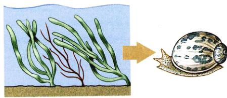
图 28.11 一条食物链 由于每一阶都损失大量的能量，营养级往往只有三、四级。
当生物做功的时候，它们中的一部分便转化成热量散失了。
28.3.2 食物链中的能量
食物链通常只有三、四级（图 28.11）。每一级都有大量的能量损失，以至于当能量通过近4个连续的营养级后，剩余的部分已经很少了。
1) 群落能量的吸收
康奈尔大学的 Lamont Cole 对纽约北部的 Cayuga 湖的淡水生态系统的能量流动进行了研究。他计算出由蓝藻和藻类生产的 4182 J (1000 cal) 能量中约有 627 J (150 cal) 进入了小型异养生物体内（图 28.12）。这些能量中约 125.5 J (30 cal) 进入生态系统主要次级消费者胡瓜鱼的体内。如果人直接食用胡瓜鱼，可获得最初能量的 0.6%。如果鳟鱼吃掉了胡瓜鱼而人食用鳟鱼的话，人只能获得约了 5.02 J (1.2 cal) 的能量。
2) 限制群落生产力的因素
高生产力的群落理论上可以支持较长的食物链。群落生产力最终受限于它所能吸收的光能的多少，因为这决定了光合作用能进行的程度。这就是北美洲落叶林净初级生产力随生长季节延长而增加的原因。温暖气候下的 NPP 高于寒冷气候下的 NPP 不仅因为森林生长季长，还因为固氮细菌更活跃，所以能为系统提供更多氮，这些氮为光合酶所必需。

图 28.12 Cayuga Lake 的食物网 自养浮游生物（藻类和蓝藻）从太阳得到能量，异养浮游生物以它们为食。胡瓜鱼以浮游生物为食，鳟鱼又以胡瓜鱼为食，但是只能得到胡瓜鱼 20% 的能量。最后，顶级消费者人类食用胡瓜鱼和鳟鱼。
28.3.3 生态金字塔
照射到植物表面的太阳能约有 1% 可以被固定。食物链中的成员，依次吸收作为其食物，进入下级生物的能量约 10%。因此，生态系统中低营养级生物个体数量远远多于高营养级生物。换言之，一个生态系统中初级生产者的生物量要大于初级消费者的生物量，营养级越高，生物量越少，所对应的能量也就越少。
Page 13 / 原始页码 557
如果用图解来表示这种关系，它们就好像金字塔一样（图 28.13）。于是我们便可以用“生物金字塔”、“能量金字塔”、“数量金字塔”等来描述生态系统的特征。
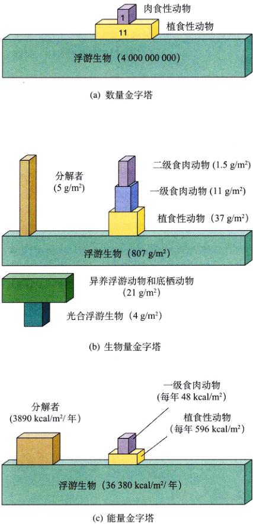
图 28.13 生态金字塔 生态金字塔是每一营养级不同特性的度量。(a) 数量金字塔；(b) 生物量金字塔（正常的和倒置的）；(c) 能量金字塔。
1) 倒置金字塔
一些水生生态系统具有倒置生物量金字塔 (Inverted Biomass Pyramid)。例如一个浮游生物生态系统——小型浮游生物占据统治地位——进行光合作用的最底级的浮游植物数量减少相当快。这是因为浮游动物迅速消耗浮游植物（食物链的底层生产者），使得浮游植物从来就不能发展成庞大的种群规模。但由于浮游植物拥有极强的繁殖能力，群落便可以支持生物量和数量都超过浮游植物的异养生物种群（图 28.13b）。
2) 顶级食肉动物
能量在每一营养级的流失限制了群落能支持的顶级食肉动物的数量。正如我们所知，在一条三级食物链中，蛇或鹰这样的三级消费者只能获得最初光合作用所获取能量的千分之一。这就说明了为什么在狮子和鹰上面没有更高级的捕食者——这些动物的生物量已不足以支持另一个营养级。
在数量金字塔中，由于这些顶级捕食者往往是大型动物，因此，金字塔顶层少量残余的生物量只能能够维持很少的个体数量。
28.3.4 不同营养级之间的相互关系
食物网的存在为不同营养级之间的物种发生相互关联提供了可能性。捕食者不仅直接影响它所捕食食物种的数量，还间接地影响到猎物所食用的植物的数量。反过来说，初级生产力的提高不仅为食草动物提供了更多的食物，同时也间接地为食肉动物提供了更为丰富的食物来源。
1) 营养级联
环顾四周，我们发现植物生长相当丰茂。为什么食草动物的数量不能达到将所有植被都吃光的程度？答案当然是捕食者限制了食草动物的数量，因此保证了植物的繁盛。这种高层营养级影响到低层营养级的现象叫做营养级联 (trophic cascade)。
实验研究已证实了营养级联的存在。例如，在新西兰进行的一个实验中，研究人员在一条溪流的不同河段上放置了阻止鱼类进入的网筛。他们将棕鳟放入其中一些河段，另一些河段则没有这样做。
Page 14 / 原始页码 558
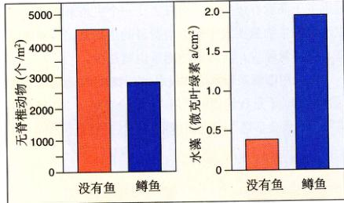
图 28.14 营养级联 有鳟鱼的溪流中植食性无脊椎动物数量少于没有鳟鱼的溪流，而水藻的数量多于后者。
10天过后，放入了棕鳟的河段中无脊椎动物的数量只有其他河段的一半（图 28.14），而有棕鳟河段中水藻（无脊椎动物的食物）的生物量，却比其他河段高出 5 倍。
营养级联的存在使人们预测到，以食肉动物为食，处于第四营养级的食肉动物也可导致连锁效应。在这种情况下，顶级捕食者限制了次级捕食者的数量，从而导致食草动物的繁盛，反过来又使植物趋于衰退。在加州北部还有有一个类似的实验。研究人员将天然溪流分段，并且在其中数段投入大型食肉鱼类。在有大型鱼类的河段中，像豆娘这样的小型捕食者数量大量减少，从而导致了它们猎物（包括食藻昆虫）数量的增加。因而，水中水藻的生物量也随之降低（图 28.15）。
2) 人类活动对营养级联的影响
人类清除生态系统中的顶级捕食者，无意中已验证了营养级联假说。早在假说被科学地证实以前，著名的自然科学家 Aldo Leopold 已经注意到了这一点。在《沙乡年鉴》(Sand County Almanac) 这本书中他写道：
“当狼在各个州被陆续消灭后，我看到了许多狼灭绝后的山峦的模样。乱七八糟的新鲜鹿脚印将南坡弄出一道道横纹。所有可食的灌木和树苗被一扫而空。开始还有病残的留下来，后来什么都没有留下，每一棵树都被吃得光秃秃的，除了长得高高的鹤擎株。”
自然界中由于捕食者的灭绝而导致低营养级发生级联效应的例子比比皆是。Barro Colirado 是 20 世纪初由于巴拿马海峡的运动而造成的一个小岛，岛上的美洲虎及美洲狮等大型捕食者已经消失。这导致了原本数量有限的小型捕食者——包括猴、美洲野猪 (peccary)、长吻浣熊和犰狳——的数量急剧增长，这些动物将它们发现的一切东西吃得精光。在陆地上筑巢的鸟类遭到灭顶之灾，许多物种因此死绝，现在已至少有 15 种鸟在岛上完全绝迹。类似地，在美国西部的橡树林里，由于大型捕食者的灭绝，浣熊、负鼠及狐狸的数量急剧增加，而在地上筑巢的鸟类数量却在大减。
3) 自下而上效应
与上面所述的相反，食物网中最低级的营养级可能对不同的较高级营养级产生不同的影响，这种效应称作自下而上效应 (bottom-up effects)。当生态系统的生产力下降的时候，食草动物的数量不足以支持捕食者，生产力的增加会很快被食草动物数量的增加所抵消；与此同时，食草动物的数量达到了足以支持捕食者的程度。
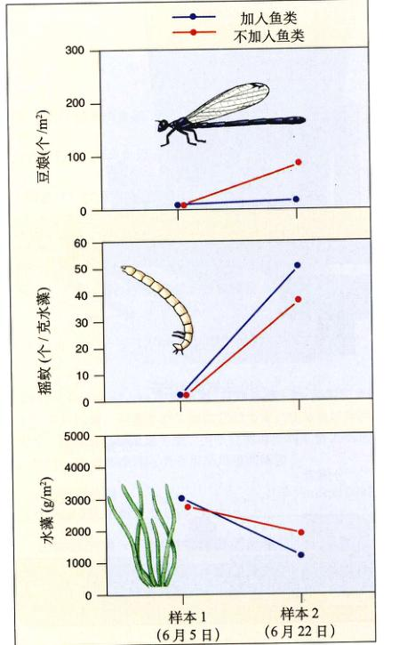
图 28.15 四级营养级联 鱼类丰富的溪流中低级捕食者（如豆娘）较少，所以有较多的植食性昆虫（如摇蚊）和较少的水藻。资料来源：M.Power，“鱼类栖息地异质性及其功能重要性”，《生态学》，1997。
Page 15 / 原始页码 559
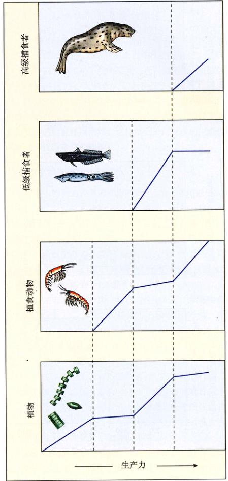
图 28.16 自下而上效应 如果生产力水平低下，植食性动物的数量就不能保持稳定。有些时候，生产力的提高导致食草动物生物量的增加，而由于增加的生产力变成了食草动物的生物量，植物的生物量不再增加。另一种情景是，食草动物的生物量转化成肉食动物的生物量，这时，植被生物量不再受食草动物控制，随着生产力的提高而再次增加。
因此，如果生产力持续增长的话，数量增加的将不再是食草动物，而是捕食者了。同理，当食草者数量达到一定水平，如果生产力再增加，顶级捕食者就可以出现，来限制次级捕食者的数量。于是，食草动物的数量会再次增加（图 28.16）。
在加州北部的 Eel 河上进行的一个严密而细致的研究中，自下而上效应得到了有力的实验支持。研究人员设置了围篱，并且将围篱中的大型鱼类全部清除。每个围篱上还放置了一个顶层，有些是透光的，有些则是半透或全暗的。其结果是每个围篱中的光照不同。不出所料，围篱中的初级生产力各不相同，透光的围篱中初级生产力最高。高的生产力带来了更多的植物和捕食者，而处于中间营养级的生物动却如自下而上假说所预言的那样，一点都没有增加（图 28.17）。
4) 营养级联和自下而上效应之间的相互关系
营养级联和自下而上效应都不是不可避免的。比如说，如果一个生态系统中存在在两种充满竞争激烈的食草动物，并且其中的一种比另一种易于被捕食的话，那么自上而下效应就不会转移至下一营养级。捕食的增加会导致易受攻击物种的数量下降，但同时会导致竞争者的数量上升。从整体上看，处于低层营养级的植被数量就不会产生变化。
与此类似，生产力的增加可能影响不到所有的营养级。在某些情况下，例如，当植物数量急剧增加到它的天敌无法控制的地步，那么，生产力增加的影响就不能传递整条食物链。
在另外的一些情况下，营养级联和自下而上效应可能互补相加强。在一个试验中，研究人员将一个湖中的大型鱼类清除，只留下可食用小水藻的浮游动物为食的小鱼。作为对照，在另一个湖中，没有将大型鱼类移走，小鱼的数量少，浮游动物的数量较多。接着研究人员将营养物质加入到两个湖中。对于前者，由于只有少量浮游动物，所以水藻生产力的增加没有导致整条食物链的膨胀，水藻大量繁殖，形成了团簇。与之形成鲜明对比，后者生产力的提高影响到了整条食物链，水藻的数量也得到了控制。在这里，自上而下效应和自下而上效应都起到了作用。
当然，自然界并非总是如此简单。在一些时候，物种可能同时作用于许多营养级，比如美洲虎同时以小型食肉动物和食草动物为食，熊既吃鱼又吃浆果等。自然界中的情形远比图28.8所示的简单直线性食物链复杂。生态学家们正还努力寻找能够解释这些错综复杂的食物链之间的营养关系的理论。
Page 16 / 原始页码 560
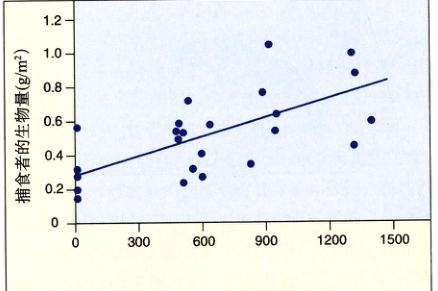
图 28.17 溪流生态系统中的自下而上效应 正如所料，用灯光照射溪流，因光合作用增加导致了植被生物量的增多，捕食者生物力得以提高。但是，植食动物的生物量并末随生产力的提高而增加，这是因为它们被转化到捕食者的生物量中去了。
28.4 生物多样性增强了生态系统的稳定性
28.4.1 物种丰富度的影响
生态学家更久以来一直在争论不同群落间物种丰富度的差异究竟会带来什么样的结果。一种说法是丰富的物种带来高稳定性，也就是说，组成越稳定，抗干扰性更好。明尼苏达大学 Cedar Creek 自然史研究所的 David Tilman 和他的同事们深入地研究了这种理论。他们在11年中时刻监控着 207 块矩形小试验地（8~16 m²）。他们记下每块样地中草原植物物种的数量，并计算了植物的总生物量（也就是试验地上所有植物的总质量）。通过一系列的研究，植物物种丰富度和群落稳定性联系起来了——拥有更丰富物种的样地年间生物量变化幅度较小（图 28.18）。另外还发现，在干旱的两年中，生物量的减少与物种丰度成反相关关系。换句话说，拥有更丰富物种的样地受影响较小。在与之相关的一个试验中，干扰也与物种丰富度成反相关关系。越是多样的群落，越能抵御新物种的入侵，换言之，就能越体现稳定性。
物种多样性还能影响生态系统的其他方面。在一个组跟进性研究中，Tilman 又设置了另外 147 块样地，并且人为地其中种植植物物种。研究人员监控着每块样地，对样地中植物的生长情况和吸收土壤中氮的情况作出分析。结果显示，试验地中的物种数越多，植物摄入的氮量和总生物量的增加越大，也就是说，物种丰富度的增加提高了整个群落的生产力（图 28.19）。
对人工生态系统的研究也证实了这一理论。研究人员在生长温室中设置了 3 个覆盖面积为 1 m² 的生态系统，温度、光强、气流和大气浓度全由人工控制。植物、昆虫及其他动物被引入其中，使这 3 个生态系统包含的物种数分别为 9、15 和 37，并且前后两者总生物量包含关系。通过对二氧化碳消耗量的测量（通常是生态系统呼吸吸作用的量度），研究者发现生物多样性的生产力呈正相关，这同 Tilman 实验得到的结果完全一样。
Tilman 关于生态系统是以物种多样性为基础的结果并不为所有的生态学家所接受。批评者大多质疑这些生物多样性研究的有效性和客观性，它们认为 Tilman 的实验设计有着严重的缺陷。指出许多生态学家认为，Tilman 的结果是个统计假象——因为你加入的物种越多，加入一个高生产力物种的可能性就越大，而一个高产物种的引入当然会导致总生产力的增加。而体现生物多样性对生态系统的影响，应在同块地段上接种单一的生产力最高的物种，要是其生产力被证明小于混种的试验地总生产力，则 Tilman 的结论成立，反之不成立。关于物种多样性对生态系统的影响的长久而激烈的争论仍在继续着。
Page 17 / 原始页码 561
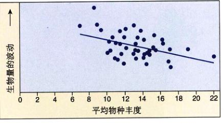
图 28.18 物种丰度对生态系统稳定性的影响 每个点代表试验区中 90.3 m² (100 平方英尺) 实验地的数据。拥有更多植物种类的实验地表现出更小的生物量波动，从而产生了更高的群落稳定性。
资料来源：D.Tilman, 生物多样性和种群与生态系统稳定性的关系，生态学，1996。
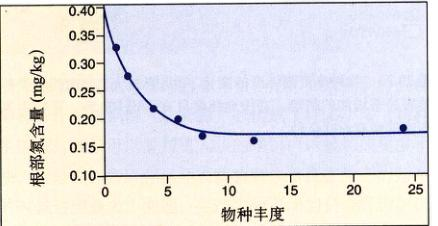
图 28.19 物种丰度对生产力的影响 在 Tilman 的实验研究中，拥有更多物种的实验地能从土壤中吸收更多的氮，使留在植物根部的氮尽量少。氮吸收量的增加是生物量增加的标志，也是生产力增加的标志。
资料来源：D.Tilman, 草地生态系统生物多样性对生产力和稳定性的影响，自然，1996。
28.4.2 影响物种丰富度的因素
虽然生态学家仍在争论为什么一些生态系统比其他生态系统表现更加稳定，表现为更加出色地抵抗滥伐、火灾、虫灾、暴风雨侵袭等干扰所导致的永久性变化，进而恢复到常态的能力。大多数人已经接受了一种流行的观点：拥有复杂生物多样性的生态系统通常比物种单一的生态系统更为稳定。拥有更多生物的生态系统能够建立更加复杂的相互作用网络，这样就会出现更多的生态位以抵消干扰所带来的影响。
提高物种丰富度的因素
群落中物种的数量怎样影响到生态系统功能？生态系统功能又是怎样影响到群落中物种的数量的？将所有的相关因素一一列举出来是极其困难的。在群落中所有可能影响物种丰度的因素中，我们将讨论最重要的三项：生态系统生产力、空间异质性和气候。另外两个可能扮演重要角色的因素，群落进化程度及受干扰程度，也会在这一章后面给予讨论。
(1) 生态系统生产力：生产力是生态系统够生产生物量的度量，不同的生态系统拥有不同的生产力。出人意料的是，生产力与物种丰度之间并不满足线性关系，生产力适中的生态系统看上去拥有最多的物种（图 28.20）。为什么会这样？这一直是一个热门的话题。一种解释是生产力水平同捕食者数量相关。在生产力水平低时，捕食者数量很少，低营养级生物相互竞争导致物种的消亡；而生产力较高时，捕食者大量存在，只有适应性最强的物种才能生存。只有当生产力适中的时候，捕食者成力中心物种，才保持了物种的丰度。
(2) 空间异质性 (spatial heterogeneity)：只有空间异质性高的环境——具有更复杂土壤类型、地形和不同栖息地特征——才能容纳更多物种，因为它们能提供更多的微栖息地、微气候、躲避天敌的蔽所等等。一般说来，动物的丰富度反映了群落中植物的丰富度，而植物的丰富度则反映了群落的空间异质性。植物为动物的物种提供了空间异质性，所以美国西南部蜥蜴种类的多少反映了植物的多样性气候（图 28.21）。
气候对物种丰富度的影响更加难以衡量。一方面，更多种类的生物只有在四季变换的环境中才能存在，因为变化的气候使得不同物种在一年中的不同时间出现，另一方面，稳定的气候便于那些不适应气候波动的特殊物种存活。因此，随着气温的降低，北美洲西海岸哺乳动物物种的数量反而增加（图 28.22）。
Page 18 / 原始页码 562
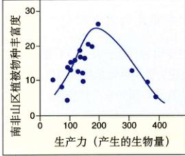
图 28.20 生产力 在南非山区的芬博斯 (Fynbos) 植物群落中，植物丰富度在生产力（生物量）适中的时候达到最大。
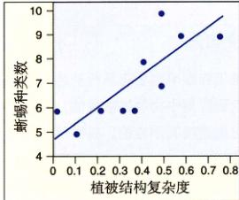
图 28.21 空间异质性 美国西南部沙漠中，蜥蜴的物种丰富度与其中植被复杂性呈正相关关系。
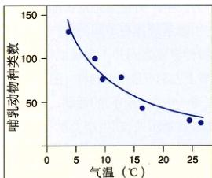
图 28.22 气候 北美洲西海岸哺乳动物的物种丰度与月平均气温成负相关关系。
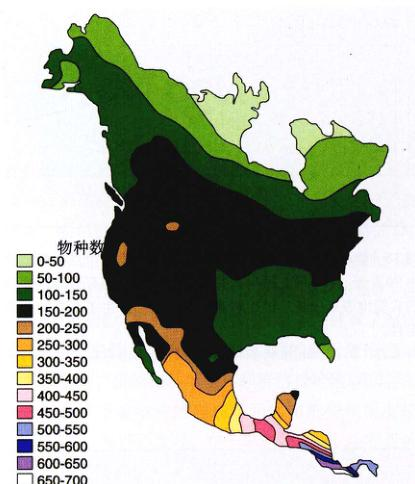
图 28.23 物种丰富度随纬度的变化 中北美洲从从北向南的鸟类种数有显著增加的趋势。在极地纬度只有不到 100 种，而在中美洲南部则有 600 余种。
28.4.3 物种多样性的生物地理分布
早在达尔文之前，生物学家就注意到了热带动植物的种类多于温带的事实。对许多生物而言，物种丰富度总是由极地到热带持续增加。这种现象称为物种多样性渐变 (species diversity cline)。这种纬度变化而变化的物种数量的生物地理梯度囊括了植物和动物，包括鸟类（图 28.23）、哺乳动物和爬行动物。
为什么热带地区的物种种类更多
早在20世纪初，生态学家对从极地到热带地区的物种多样性的渐变头痛不已。问题不在于建立一个能够解释为什么热带物种较多的理论，在于如何验证许多可能的假说，将它们分门别类。在这里我们考虑五个最流行的因素：
(1) 进化年龄 (evolutionary age)：一种通常的假说认为，热带之所以比温带拥有更丰富的物种，是因为热带经历了一个长期的、稳定的进化时代，而温带却遭遇了若干次冰川期。热带群落的长期进化使得神群复杂的相互作用同群一起进化，从而促进了热带植物种类的繁盛。
但是，最近的研究表明热带群落的长期稳定性被显著夸大了。一项对在未受干扰的土芯（用特殊钻土钻从深层取出的土柱）中的花粉粒的检测证明，在冰川时期，热带雨林收缩成几个被草地环绕的小森林。这就说明了热带地区在长久的进化年代中并没有一直保持特有的高度丰富。
(2) 发达的生产力：另一个流行的假说是热带地区所接受的太阳辐射强于温带地区，因而具有更多物种。这种观点强调对于一年一轮的生长周期，更多的太阳能
Page 19 / 原始页码 563
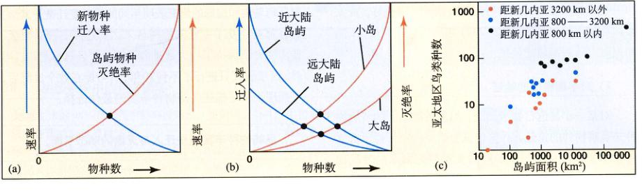
图 28.24 岛屿生物地理的平衡模型 (a) 当新物种迁入率与当地物种灭绝率相等的时候，岛屿物种丰度达到平衡（黑点）。(b) 丰度平衡随迁入率、岛屿大小、相距迁入源距离而变化。物种丰度与岛屿面积成正相关，与大陆的距离成反比关系。小岛灭绝率较高，使得平衡点偏左。同样，遥远的岛屿迁入率较低，也使得平衡点偏左。(c) 与大型岛屿的距离对物种丰度的影响（可以将大岛看作迁入源）。同样大小的岛屿，越远的物种越少。
极大地增强了热带植物的总光合作用。如果我们将热带森林看作一块馅饼（总资源）被切成了许多小块（物种生态位），我们可以看到更大的馅饼可以被切成更多小块。但是，许多研究已经表明物种丰富度在生产力中等的时候达到最大。同理，生产力的再增加只会导致更低而非更高的物种丰度。由此看来，这大概是由于光线在透过热带雨林的各个层次时，形成了各种具有不同强调和强度的微光环境，从而促进了物种多样性的增加。
(3) 可预见性：热带没有冬天，热带地区的气温常年稳定，今天与明天没什么两样。这种常年不变的环境促进了物种的特化。生态位资源被分割，从而避免了竞争。这样必然导致热带地区大量具有特化适应物种的出现，这正是我们所见到的。科学家做了许多实验，几乎全部支持了这种假说。热带群落比温带地区拥有种类更多的生态位，但是它们之间的差异较之温带要细致得多。
(4) 捕食：许多报道指出热带生态系统中的捕食现象更加显著。按照这种理论，强大的捕食效应削弱了竞争的影响，从而导致了更多生态位的交叠，最终提高了物种的丰富程度。
(5) 空间异质性：如前所述，空间异质性导致了物种的丰富。由于高度复杂，热带森林拥有更多的微栖息地，因而为物种的多样性提供了有利条件。
28.4.4 岛屿生物地理
大面积岛屿所包含的物种数多于小岛的物种数，这是生态学上一个最为可靠的物种分布模式。1967年，普林斯顿大学的 Robert MacArthur 和哈佛大学的 Edward O. Wilson 指出，这种物种——地域关系 (species-area relationship) 是岛屿面积和隔离程度对物种灭绝和迁入产生影响的结果。
1) 平衡模型
MacArthur 和 Wilson 指出物种是均匀分布在岛屿上的，所以岛上有积聚越来越多的新物种的趋势。在新的物种出现的同时，另一些物种则消亡了。随着最初荒芜一片的岛屿物种数量的增加，迁移的比率必然降低。这是因为岛上还没有该物种的可能性越来越小。同时，灭绝的比率却在增加——岛上的物种数越多，任一物种灭绝的机会就越大。因此，灭绝和迁入的数量总会在某一点处达到平衡，这时物种数就会保持恒定。所以，任意一个特定的岛屿都会有一个长期稳定的平衡物种数（图 28.24a中的交点），虽然由于旧物种的消亡和新物种的移入造成物种组成不断变化。
MacArthur 和 Wilson 的平衡理论强调物种丰度是处在迁移与灭绝之间的一个动态平衡。岛屿的大小及与大陆间隔的距离都可能发挥了重要的作用。我们可以预料小岛上物种灭绝率较高，因为平均来说它们种群数量较小。同样，我们可以知道在离大陆较远的岛屿不会有很多移入者。所以，离大陆遥远的小岛物种少，而近大陆的大岛物种多（图 28.24b）。
Page 20 / 原始页码 564
这个简单模型的预言与实验数据符合得很好。亚太地区岛屿鸟类物种数（图 28.24c）与岛屿面积成正比，而同相距大陆的距离成反比。
2) 对平衡模型的验证
对某一小岛进行物种调查，然后清除岛上的所有物种并观察物种的重迁人，这些试验研究的结果似乎都支持了平衡模型。但是，长时间实验研究揭示的情况比 MacArthur 和 Wilson 预想的要复杂。传统理论预言因物种消亡和迁入人会引起物种变迁 (species turnover)，但是，对岛屿鸟类和蜘蛛的研究表明年间的物种变迁微乎其微。而且那些经受了变迁的物种从未达到过高的种群数量。很多物种都保持了巨大的种群，并且鲜有绝迹。当这项研究进行了不到 20 年，有可能会在数个世纪后，平衡理论仍是描述岛屿物种丰度的最佳选择。
Page 21 / 原始页码 565
小 结
28.1 生态系统中的化学循环
- 地球上水的 98% 是大气中的可循环水。在美国，淡水资源的 96% 是地下水。
- 每年大气含有的 1000 亿吨二氧化碳中约有 10% 通过光合作用固定下来。海洋中也溶解了与所有生命体含有的碳等量的碳。
- 氮通过被土壤或根瘤上的固氮菌固定而被生物体利用。
- 磷是许多生物分子的重要组分，它随土壤风化而被输送到海洋中。
28.2 生态系统由捕食与被捕食的关系构成
- 植物是将照射在它们叶片上的光能转化成生物能量的自养生物。生产者以它们为食的食草动物和以食草动物为食的食肉动物组成了三个营养级。
- 每一层营养级所利用的能量都只有低一层的 10%，因此食物链通常都很短。
28.3 生态系统的能量流动
- 群落的初级生产力是其中光合作用产生的生物量的量度。
- 能量在生态系统的营养级中流动，每一步都要损失许多。生态金字塔反应了这种能量损失。
- 不同营养级物种之间的相互作用能影响到所有营养级的生物。
28.4 生物多样性增强了生态系统的稳定性
- 群落物种数的增加似乎能提高生态系统的稳定性。精确控制的实验表明物种丰富度高的群落更稳定，不易受外界干扰。
问 题
- 生物地球化循环中物质最初储备库是什么？更多的维系生命的化学物质是在这些储藏库中，还是在生物体中？
- 什么是反硝化作用？哪些生物可以产生这种作用？
- 磷循环和水、碳、氮、氧循环有什么不同？磷的天然来源有哪些？
- 滥伐森林对水循环和土壤肥沃度有什么影响？
- 捕食者数量的增加怎样影响食物链下层？营养的增加怎样影响到上层？
- 初级生产力、总初级生产力和净初级生产力有何不同？
- 肉食和植食究竟哪种食物方式能为生物提供更多的营养价值？
- 为什么雨林拥有更高的物种多样性？
- 为什么同样大小但是远离大陆的岛屿物种少于靠近大陆的岛屿？为什么不同大小的岛屿物种数不同？
媒体资源
- 碳循环
- 氮循环
- 营养循环
- 水循环
- 地下水
- 技能测验：水循环
- 碳循环
- 氮循环
- 生态系统介绍
- 能量流动/营养级
- 技能测验：食物链中的营养级
- 学生研究：评估原始环境
- 技能测验：食物网中的能量流动
- Cayuga湖的食物网
- “科学”专栏：生物多样性好吗？
- 生物伦理案例研究：黄石公园的狼
- 技能测验：岛屿生物地理
- 平衡模型